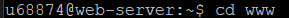
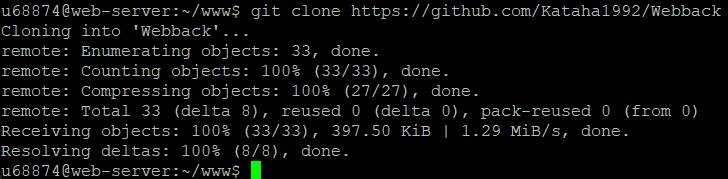

С помощью клиента PuTTY подключился к учебному серверу kubsu-dev.ru, указав соответствующий адрес, порт 58528 и тип подключения SSH

Используя команду <>ping kubsu.ru, получил информацию об IP-адресе веб-сервера kubsu.ru, а также информацию о задержке между узлами сети
Команда nslookup используется для получения информации о DNS-записях и проверки, как доменные имена соответствуют IP-адресам. После выполнения команды мы видим результаты, включая IP-адреса, соответствующие указанному доменному имени, а также информацию о DNS-серверах.

Всю доступную информацию о домене kubsu.ru узнал с помощью команды whois kubsu.ru

Filezilla
 